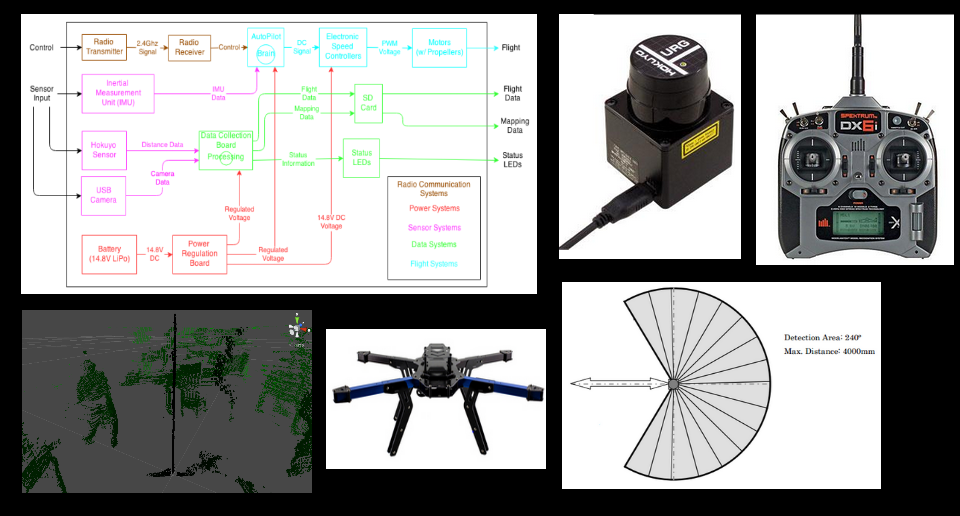

UAV LiDAR Project

Project description
Our product is a quadcopter with the capability to capture and save images of its environment 5 meters or less in a 240 degree sweep in front of it.
This allows the user to capture clear imaging to build a map of an unknown environment.
Note the final product will provide quality imaging data that could be stitched together for a complete environmental map.
Team Members
Team Members
- Josh Bowen
- John Kadlubowski
- Jeff Randall
- Akmal Idris
- Mitchell Lezarczyk
Technologies used
Ubuntu, ,ROS, Hokuyo, Unity3D, C#